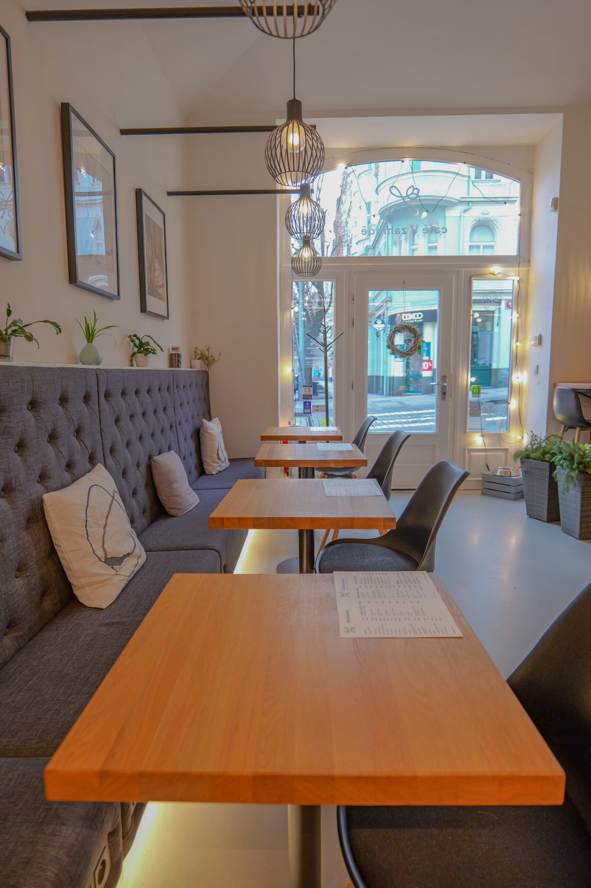
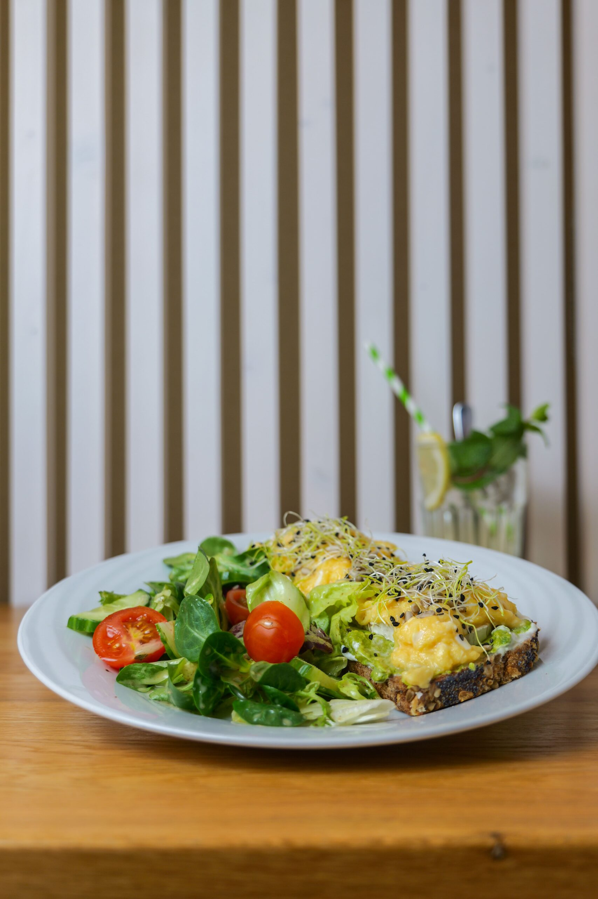
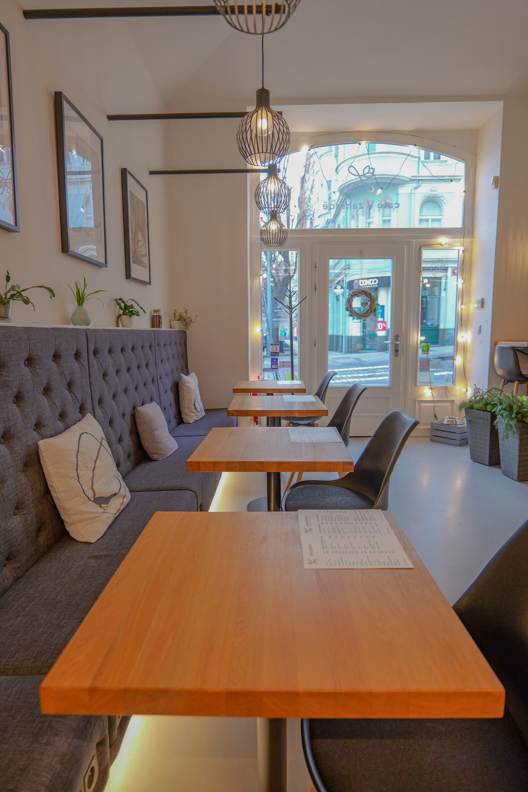
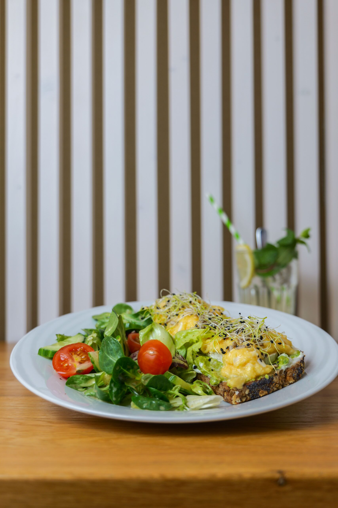

Kouzelná atmosféra
Příjemné posezení v srdci zeleně, které vás přenese mimo městský shon.
Café v Zahradě – klidná kavárna v srdci Nuslí
Naše kavárna vás okouzlí příjemným prostředím, vůní čerstvě připravené kávy a jedinečnou zahradou ve vnitrobloku.
Příjemné posezení v srdci zeleně, které vás přenese mimo městský shon.
Nabízíme kávu, čaj, dezerty, snídaně a odpolední menu, které si zamilujete.
Ideální místo pro klidný odpočinek, pracovní schůzku nebo společenskou akci.

Vítejte v Café v zahradě
Objevte kouzlo naší kavárny v Nuslích, Praha 4. Café v zahradě je místem, kde se spojuje relaxace s vynikající kávou a domácími pokrmy. Naše kavárna nabízí zázemí ve dvou stylových místnostech, kde si můžete vychutnat naše výborné kávy, čaje a lahodné dezerty.
Za prosklenými dveřmi vás čeká zimní zahrada, která propojuje vnitřní prostor s venkovní zelení. Vyšší zahrada ve vnitrobloku nabízí tiché posezení mezi kvetoucími keři a květinami. Pro společenské akce máme připraven salónek v suterénu.
Naše zahrada ve vnitrobloku je ideálním místem pro relaxaci. Obklopena květinami a zelení, poskytuje tiché posezení, kde si můžete odpočinout od ruchu městského života. V zimním období vás zahřeje atmosféra naší zimní zahrady.
STÁLÉ MENUAno, všechny naše pokrmy a nápoje vám rádi připravíme s sebou, abyste si je mohli vychutnat kdekoliv chcete. Stačí nám jen sdělit svou objednávku a během chvilky budete mít vše připravené v praktickém balení.
Ano, rádi vám pomůžeme s organizací oslavy, firemního večírku nebo jiného setkání. K dispozici máme útulný salonek, který vám poskytne dostatek soukromí. Na přání zajistíme občerstvení, včetně domácích dezertů, skvělé kávy a kvalitního vína. Stačí nás kontaktovat a domluvíme všechny detaily.
Ano, myslíme i na ty, kteří mají speciální stravovací požadavky. Nabízíme bezlepkové i veganské zákusky, abyste si u nás mohli pochutnat bez jakýchkoliv omezení. Pokud máte konkrétní přání, neváhejte se nás zeptat – rádi vám doporučíme vhodné alternativy.
Ano, v období od jara do podzimu je pro vás otevřena naše krásná zahrádka ve vnitrobloku. Můžete si zde vychutnat šálek kávy či dezert v klidném a zeleném prostředí, daleko od ruchu města.
Ano, u nás můžete pohodlně platit kartou, ať už se jedná o běžné platební karty, bezkontaktní platby či mobilní platby. Hotovost samozřejmě přijímáme také.
„Byli jsme poprvé a naprosto top top. Vejce Benedikt vynikajíci chai latte a káva to samé. Obsluha strasnē milá a ochotna. Urcitē dorazime znovu“
Klára Ernekrová„Opravdu krásné bistro. Jako teplý nápoj jsme si objednali cappuccino a horkou cokoládu. K jídlu jsme zvolili snidané sampiónu a vejce Benedikt, vsechno bylo perfektní. Obsluha velmi pozorná a vstrícná k dëtem. Opravdu TOP.“
Petr Hora„Fajnová kavárna se super zahrádkou ve vnitrobloku. Zahrádka je obsluhovaná od pultu, systém rozliseni stolú pri placeni je vtipne resen prázným popsaným kelímkem, který prinesete pri placeni s sebou. Karty berou. Buchticky s krémem výborné.“
Petr Zeman„Velmi prijemné místo s kvalitnim jídlem. Zavítali jsme sem na snídani v kombinaci s místem kde bychom mohli pracovat na notebooku. Témēr u kazdého stolu je zásuvka, coz nám udélalo ohromnou radost a strávili jsme tam cas od poledne az po zaviracku. Samozrejmé jsme ochutnali spoustu véci, od káv, caju, limonád az po vynikající vejce.“
Filip Novák

 


